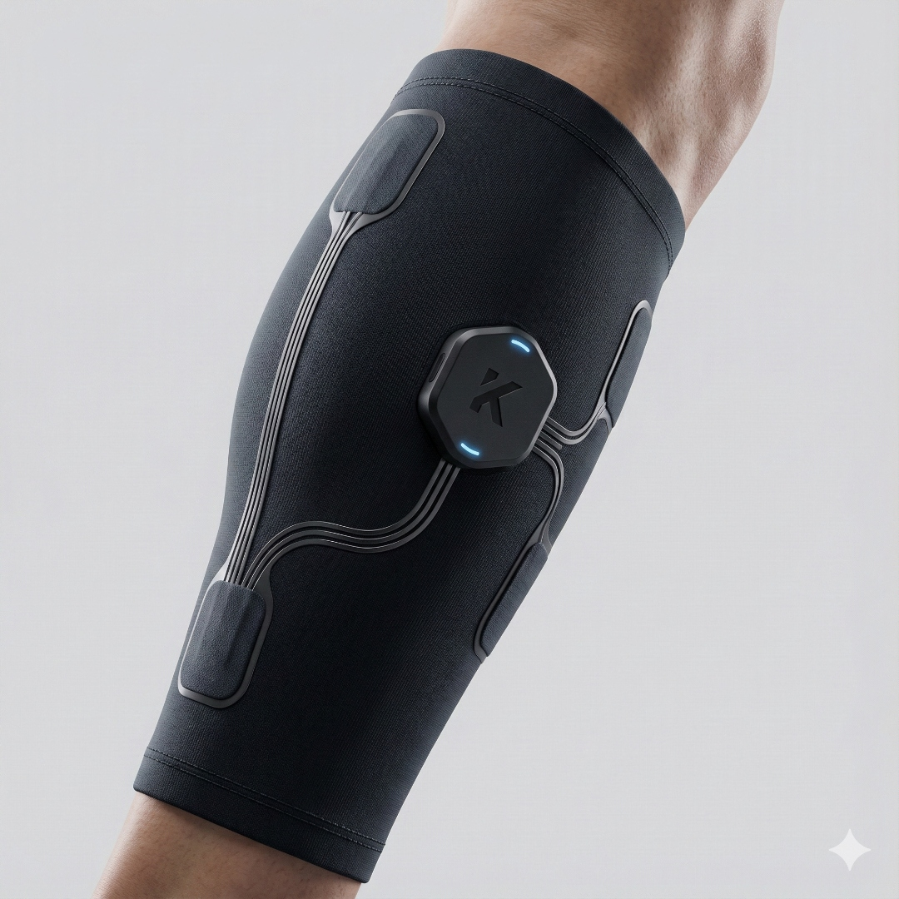

Measure
Wearable IMU sensing, and hybrid EMG + IMU sensing for muscle activation alongside motion. Two hardware tiers, compared below.
Available now
Kineura combines wearable EMG and motion sensing to help runners and athletes understand fatigue, imbalance, and recovery in real time.
Kineura measures muscle activity and motion, records it into a coherent training timeline, and analyzes it into metrics athletes, coaches, and clinicians can act on. Wearable hardware is one part of that system, not the whole company.
Wearable IMU sensing, and hybrid EMG + IMU sensing for muscle activation alongside motion. Two hardware tiers, compared below.
Available nowA synchronized timeline bringing together wearable data, planned workouts, notes, and connected training context.
In developmentActivity recognition, walk-run interval data, and video-based movement tracking for jump and sprint mechanics.
In developmentReview workflows built for how athletes, coaches, and clinical collaborators actually use movement data.
In developmentPace, distance, and heart rate tell you what you did. They don't reveal which muscles fired, when fatigue set in, or whether your stride stayed balanced through the final mile.
No gel, no prep. Just put it on and go.
Captures motion data from every stride.

Keeps electronics precisely positioned from training runs to race day.
Real-time stream. Your results are ready before you catch your breath.
No gel, no prep. Just put it on and go.
Captures motion data from every stride.
Keeps electronics precisely positioned from training runs to race day.
Real-time stream. Your results are ready before you catch your breath.
Same sleeve platform, two sensing configurations. Neither is a "lite" version of the other: choose based on whether you need motion alone, or motion plus muscle activation.
Motion and movement tracking
Motion tracking plus muscle-activity sensing
Lightweight sensors sit comfortably on the major running muscles, capturing high-fidelity EMG and motion data.
Synchronized EMG and IMU streams record activation, timing, and movement at hundreds of samples per second.
Signals become metrics: muscle activation, fatigue, stride symmetry, ground contact, cadence, and recovery.
Translate insight into smarter training, earlier intervention, and a more durable athlete.
A focused set of metrics that turn raw biosignals into decisions you can train on. Values shown are illustrative examples. Tap any card for the methodology and cited research behind it.
Muscle Activation
Fatigue Index
Stride Symmetry
Ground Contact Time
Cadence & Motion Trends
Recovery Signals
Interact with the original Kineura app mockup to explore live workout metrics, EMG signal quality, muscle activation, cadence trends, and research-backed metric detail screens. Simulated data shown for product preview
Runners and physical therapists are already core users of the EMG + IMU sleeve today. Coaches and research collaborators get a dedicated path built around how their work actually runs.
Roster-level workflows, program access, and objective load data your staff can act on this week.
Explore team workflows
Pilot conversations, methodology detail, and a collaboration path for PTs, clinicians, and performance labs.
See collaboration optionsKineura supports training insight and performance decision-making. It is not a substitute for medical diagnosis or treatment.
We design our metrics to be honest about what biosignals can and cannot tell you. When in doubt, talk to a qualified clinician.
Kineura started with a simple observation: the most informative signals about how an athlete moves, muscle activation and fine-grained motion, were locked inside expensive lab equipment. We're building a wearable platform that brings those signals into everyday training, without losing the rigor that makes them meaningful.
We're a small team with backgrounds in biomechanics, signal processing, and track and field.
Join the early access list to receive product updates, research notes, and an invitation when units become available.
Coach or clinical collaborator? Use the dedicated collaboration paths instead, which ask the questions relevant to your use case.
A connected suite of wearable EMG and motion sensing, workout logging, and movement-analysis tools built for runners, coaches, and clinical or research collaborators.
No. Kineura supports training insight and performance decision-making. It is not a substitute for medical diagnosis or treatment.
Pricing isn't finalized. Early-access members will be the first to know before general availability.
The EMG + IMU sleeve is available to a limited number of early-access members now, with rolling invitations as production scales. Join the list above and we'll reach out directly.
Signals are captured on-device and analyzed in our app. We're committed to clear, opt-in handling of any data you choose to share with us.
Running is our first focus because the movement is repeatable and well-studied. The hardware is designed to extend to all sports, and sport-specific metrics are on the platform roadmap.